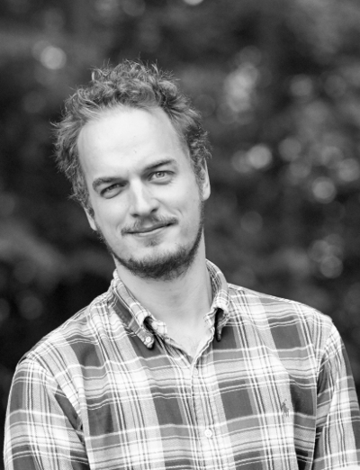
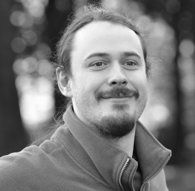

Former group members listed alphabetically
Martin Nors Pedersen
Post-doctoral researcher
Martin obtained his PhD in 2015 from the Department of Drug Design and Pharmacology at University of Copenhagen. The main focus of the PhD was investigating transiently formed oligomeric species of alpha-synuclein either on or off pathway to the fibrillar species well known from Parkinson’s disease. After finishing his PhD, he went on to work as a beamline postdoc at the European Synchrotron Radiation Facility (ESRF). At ESRF he gained valuable experience with both pump-probe and stopped-flow techniques for time-resolved experiments with X-rays. Martin’s main interest is developing methods, both experimentally and in data analysis, to investigate the underlying nature of protein-protein and protein-ligand interactions. Time-resolved experiments (pump-probe, stopped-flow and continuous-flow) are key in this pursuit, and one of his main foci in the group is to make use of microfluidic chips for time-resolved experiments. Martin’s work is funded by the BRAINSTRUC project. Contact: martinnors (at) nbi.ku.dk ORCID: 0000-0001-6975-5071
Martin Schmiele

Post-doctoral researcher
Martin finished his diploma thesis in physics at the Friedrich-Schiller-University in Jena in 2009 in the at that time emerging field of transformation optics. During his PhD in Tobias Unruh's work group at the FRM-II / Technical University of Munich (2009-11), and later on at Friedrich-Alexander-University Erlangen-Nuremberg (2011-15), he studied structures in lipid soft-matter dispersions by small-angle X-ray and neutron scattering, wide-angle X-ray scattering, differential scanning calorimetry and dynamic light scattering. He used the same techniques to assist other researchers in their studies on liquid crystals, polymers and porous materials. Now he is working as a postdoc on the LINX project to analyze nanostructures with small-angle scattering in products from various Danish companies. Contact: martin.schmiele (at) nbi.ku.dk ORCID: 0000-0001-6973-3155
Andreas Haahr Larsen

Post-doctoral researcher
Andreas obtained his PhD in physics at the Niels Bohr Institute, University of Copenhagen (2016). Andreas' PhD was part of the CoNeXT project, where he was mainly working with small-angle X-ray and neutron (SAS) experiments at large-scale facilities - from design to data analysis. His main interest lies in development of analytical tools for obtaining structural information on biomolecules with SAS and complementary techniques, molecular dynamics simulations in particular. Contact: andreas.larsen (at) nbi.ku.dk ORCID: 0000-0002-2230-2654
Søren Roi Midtgaard

Post-doctoral researcher
Søren Roi Midtgaard is a post doctoral researcher at the Niels Bohr Institute at University of Copenhagen, Denmark. After undergraduate studies in nanoscience at University of Aarhus, Denmark Søren moved to Copenhagen to perform doctoral studies at the department of Chemistry where he was awarded the PhD degree in 2013. Søren’s main interest lies in the structural understanding of biological processes, which after initial projects centered around NMR and crystallography has led to heavy use of small-angle scattering. As especially small-angle neutron scattering (SANS) is currently under rapid development, a desire to exploit these possibilities to the fullest has led to involvement in numerous industrial and scientific collaborations. Contact: soromi (at) nbi.ku.dk ORCID: 0000-0001-6694-0626
Martin Cramer Pedersen 
Post-doctoral researcher
Coming from a background in theoretical physics and applied mathematics, Martin's research focuses on the theory and application of scattering methods; in particular in the context of structural biology as well as colloid and polymer science. He received his Ph.D. in 2014 from the Niels Bohr Institute and spent the following two years at the Department of Applied Mathematics at the Australian National University. His interests comprise high-performance computing, Bayesian statistics, and the structure and function of various biophysical systems as well as differential geometry and topology and the mathematical and technical aspects of scattering - in particular solution-based small-angle scattering. Martin's work is funded by the Synergy- and the BRAINSTRUC-projects. Contact: mcpe (at) nbi.ku.dk ORCID: 0000-0002-8982-7615
Nicholas Skar-Gislinge

Post-doctoral researcher
Nicholas is a post-doctoral researcher within the LINX and NXUS projects. He has a PhD in biophysics from the Niels Bohr institute from 2014, where he investigated the use of nanodiscs as a tool for low resolution structural studies of membrane proteins. From 2013 to 2015 he was awarded a novo STAR fellowship at department of formulation and biophysics at Novo Nordisk A/S and physical chemistry at Lund University. In 2015, he was a post-doctoral researcher at physical chemistry at Lund University. Nicholas academic interests revolves around studying protein interactions using scattering methods, and applying scattering methods to the challenges found in industry. Contact: nicholas.skar-gislinge (at) nbi.ku.dk ORCID: 0000-0003-0549-8074
Viktor L. Holm 
Former MSc student
Viktor L. Holm is a recent master student from the group. Viktors has a BSc in nanoscience (2015) and a MSc in Biophysics (2017) from the Niels Bohr Institute at University of Copenhagen. Viktors research profile is in solution small-angle scattering techniques, simulation and modelling of proteins based and scattering data, and biochemical techniques for protein sample preparation. Contact: jrk732 (at) alumni.ku.dk